Départ de Dunedin
1 octobre 2019
Salut à tous!
Le dernier blog avant de partir (dans une semaine!). Voici donc quelques dernières photos prises ici et là à Dunedin et aux alentours.
La photo avec le gros poisson, c'est à Gore, une petite ville au sud de Dunedin que nous avons passée en allant faire du camping. Le tunnel creusé dans la roche mène à une belle plage au pied de falaises de grès.
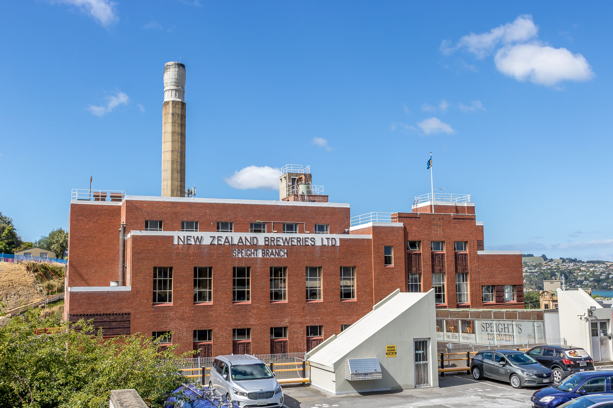
On voit aussi un panorama de Dunedin, pris au sommet du Mont Cargill. Et finalement, il fallait bien une photo des mythiques moutons de la Nouvelle-Zélande.
Nous sommes très excités de revenir chez nous! Quelques derniers trucs à vendre et nous sommes prêts à partir!
À bientôt!
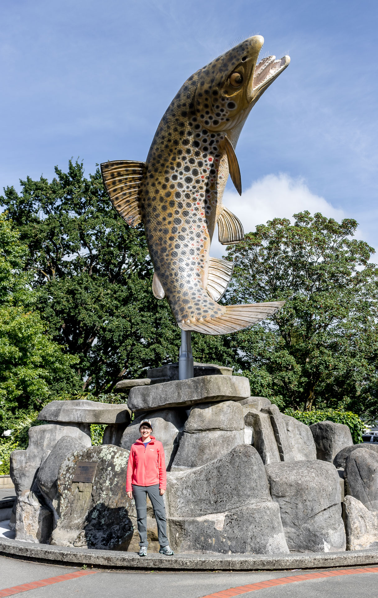
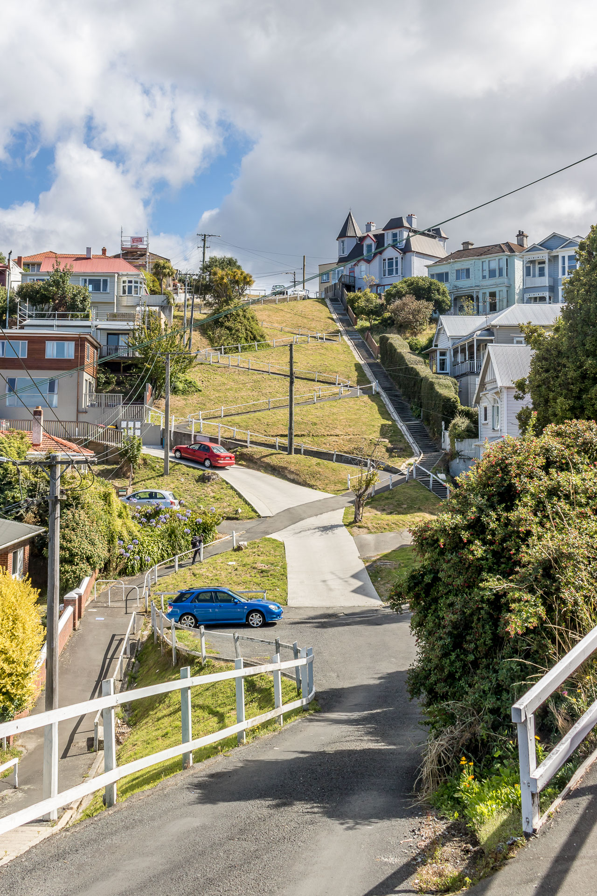
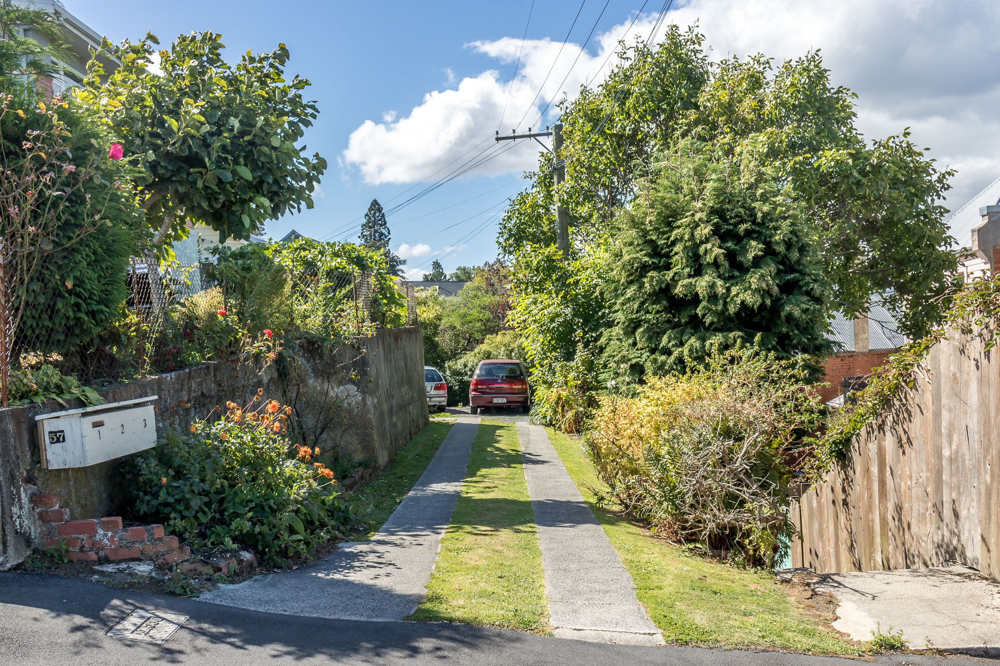
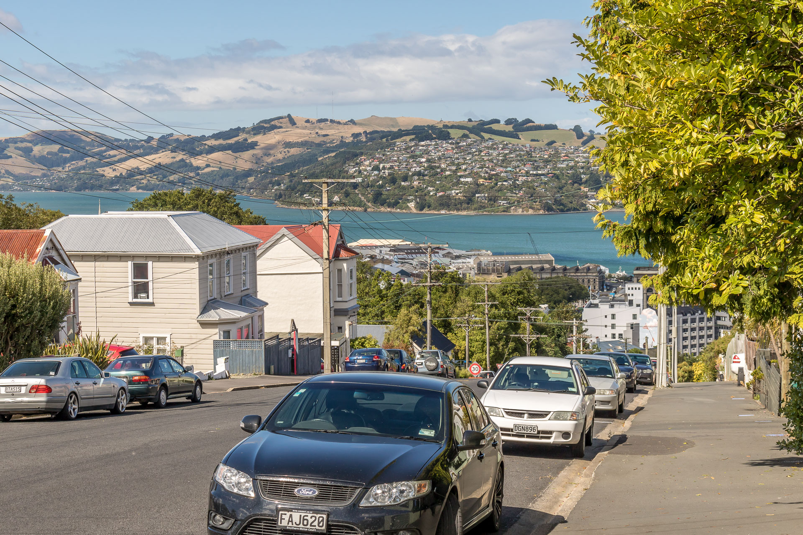
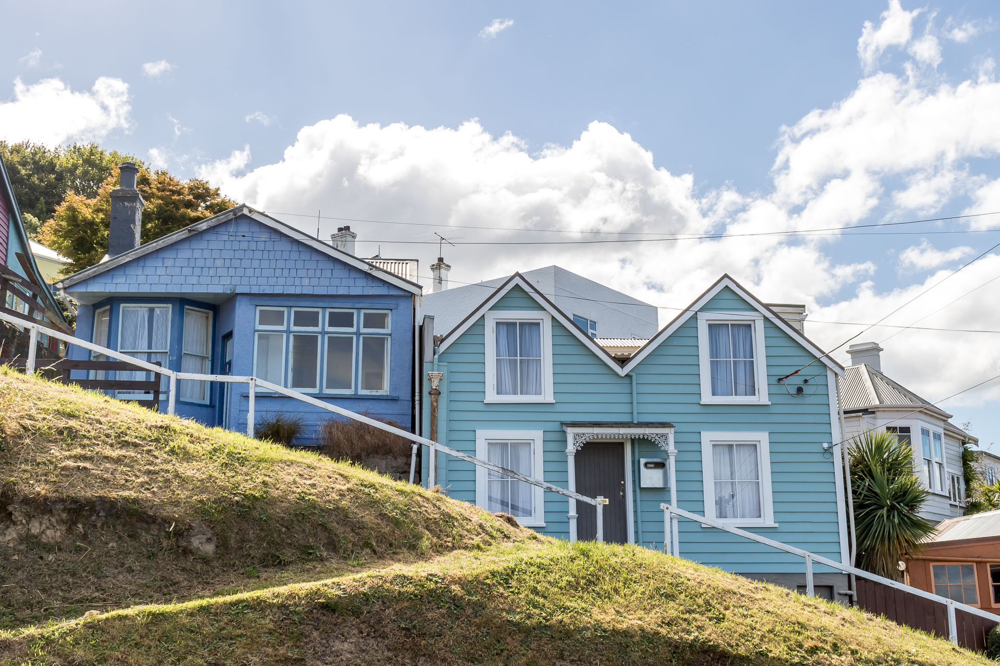
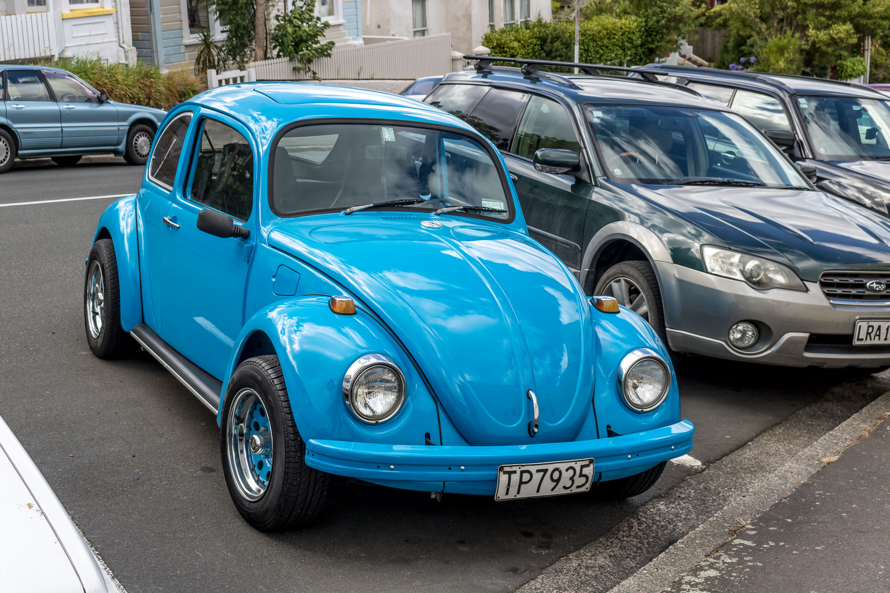
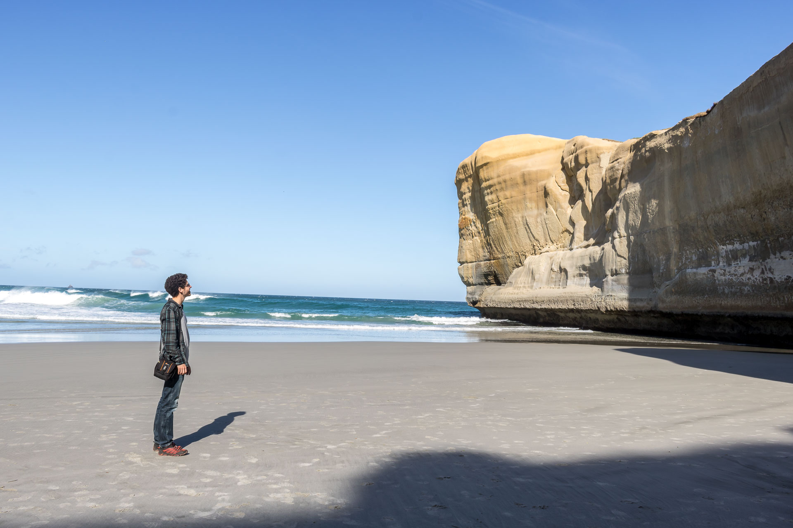
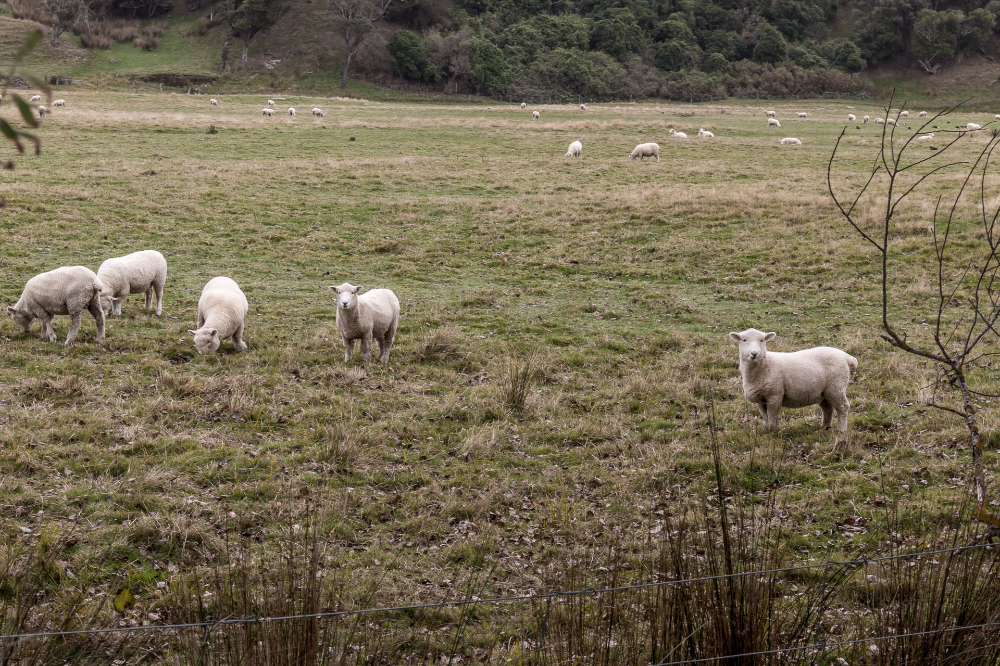
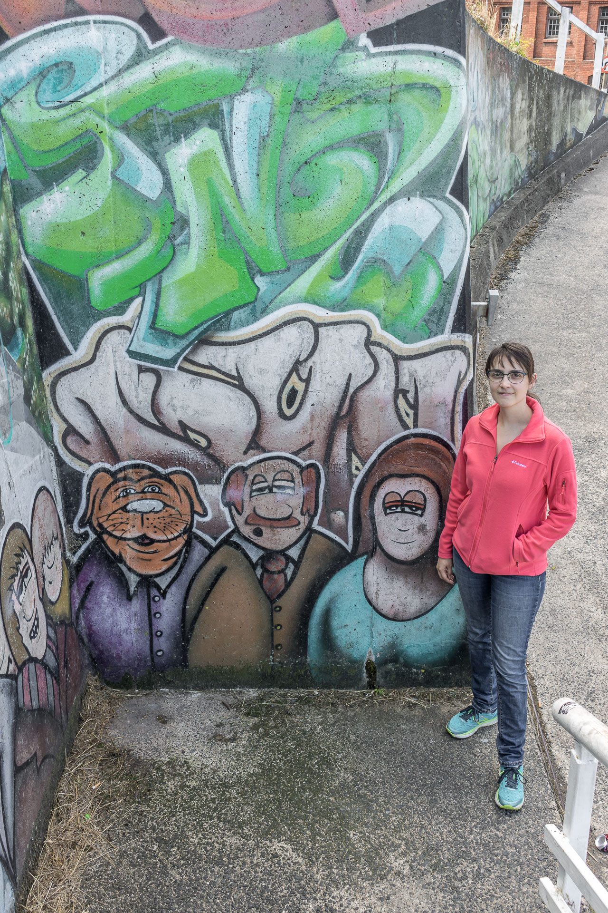
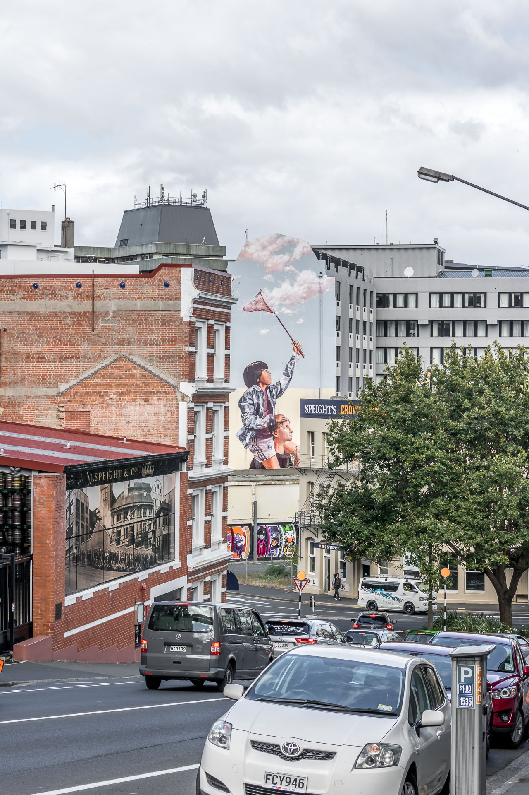
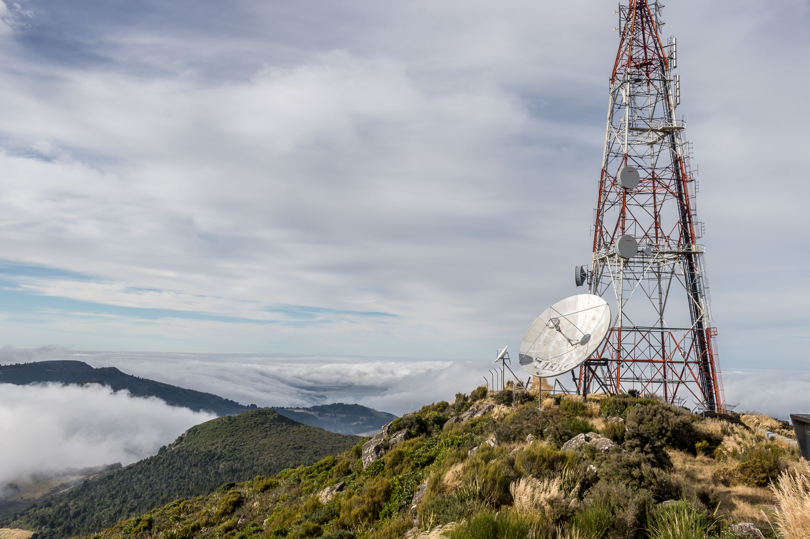
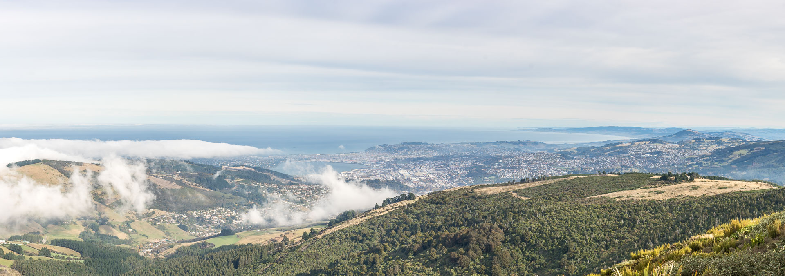
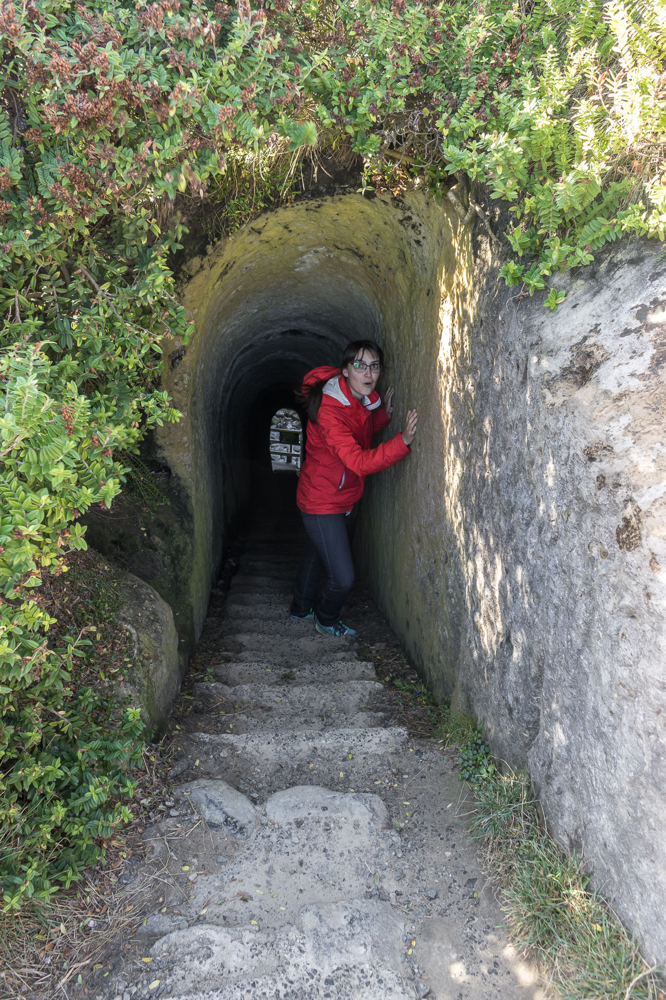
×